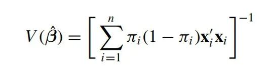
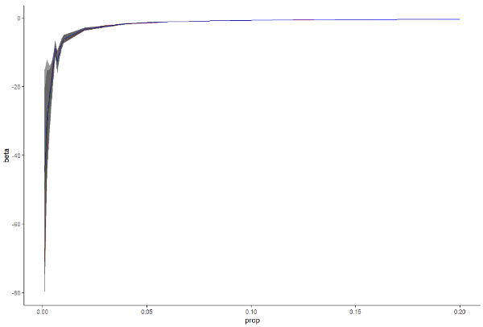
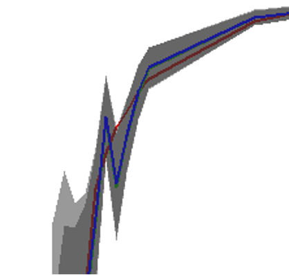
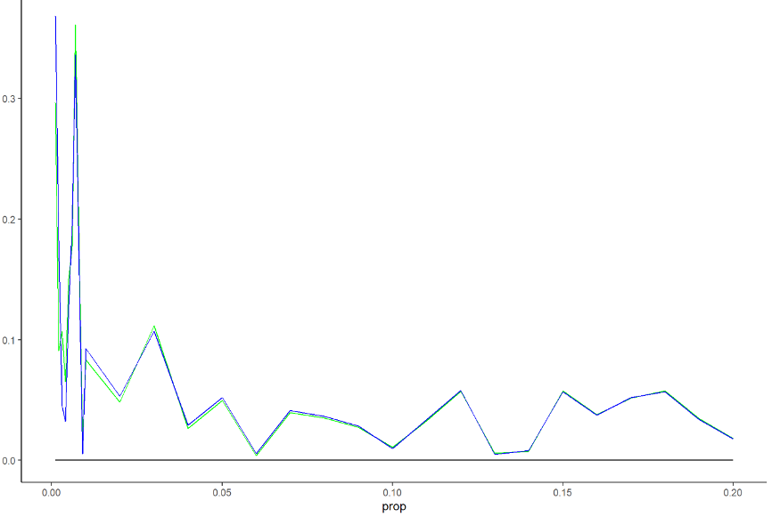

收录于合集 #方法论 3个
在社会科学的数据分析中，有那么一类变量比较常见，即0-1的二分变量。当它是自变量时，则称为虚拟变量回归模型，当它是因变量时，此时常用的模型是logistic或probit回归（这两种模型的区别在于对方差的假定不同，二者估计的结果差异不大，但是在更为复杂的模型中可能会有不同的功能）。二分变量可以诠释为有或无，发生或没有发生等。在流行病学或社会科学中，有一些事件会发生，但是出现的频次比较低，比如战争、罕见病症以及政体变迁等。很多时候定性研究在这种重要的罕见事情上大放光彩，通过深入的资料档案分析与小案例比较方法来探究这些事件的成因，总结出具有一定普适性的理论。
在定量研究中，稀有事件的logistic分析往往存在困难，这点在数学上可以解释，即频率派方法求解待估计系数矩阵时（公式如下），如果事件发生概率过低，矩阵中就会有很多元素约等于0，那么在求矩阵的逆矩阵时就容易出问题，造成估计结果的可信度不高。现在的问题是：什么样的数据算是稀有事件数据？

加里·金（Gary King）2000年左右与其合作者发表的两篇文章讨论了对稀有事件回归模型的估计修正。当然，他们也没有指出多小的比例算是稀有事件（不过他们文章中使用的数据集比例是0.34%，的确算比较小了）。他们文章的核心观点是，通过先验调整（prior correction）或者加权（weighting）的方式来调整估计系数使得样本估计更接近总体。核心的参数是样本的稀有事件比例和总体的稀少事件比例。因为他们认为稀有事件数据在数据收集过程中会面临样本量和变量数目的权衡，因此在估计上可能会低估了稀少事件的出现频次，因此这个调整方案目的和功能也只是让估计更接近真实参数而非优化估计。
那么核心问题是，多少比例的稀有事件才需要修正呢？为此小编采用仿真模拟（simulation）的方法，构建了不同比例的稀少事件数据集，分别使用普通的logistic方法和Gary King的rare event logit方法来得到解答。数据分析使用R，基础包的glm()函数提供了logistic回归的程序，Zelig包中的relogit()函数提供了rare event logit的程序（这个包的其他函数出了问题，近期刚刚下架，但是错误报告里面没有提relogit()的问题，因此可以用之前版本的进行计算）。
小编设定了从0.001到0.01的以0.001为步长的比例值和从0.01到0.20的以0.01为步长的比例值，最终共得到29个比例值，分别看这两种估计方法在不同稀少比例下的表现。由于logistic固定了常用阈值，因此设计阵xβ和比例p之间存在某种函数关系，这种函数关系没有解析解，只能通过仿真方法求得数值解进行比较。这里小编还设定了随机数种子666（希望获得好运）使得结果可重复，并虚拟了100000个样本量的数据集，变量服从最小值为0，最大值为10的均匀分布（正态分布最终会导致估计比例收敛到0.5，没有办法达到想要的比例）。下图是仿真模拟的结果。
 
这幅图展示的是给定数据集的β和比例p之间的真实关系（红线）、logit回归的估计（绿线），rare event logit回归的估计（蓝线）。为了看得更清晰，截取上左图的部分结果放到右图，可以看到尽管估计上有差异，但是由于关键回归系数的标准误巨大，因此真实值也依然在估计的不确定范围（uncertainty）内。为了进一步观察，小编计算了估计值和真实值之间的差异占真实值的比例，结果如下图。

这张图我们大概可以看出来，当p比较小的时候，估计值和真实值的差异非常大。而且更为关键的是，rare event logit表现也没比正常的回归方法要好到哪里去。所以至少目前的仿真模拟结果呈现出来的结果是，如果以偏差10%为标准，至少比例要达到1%，如果稀有事件数据比例低于1%，两种方法估计上比较不出谁优谁劣。
所以目前能够初步得出的（未经系统检验的）结论是，如果稀有数据的比例达到1%，那么logit模型一般不会有非常大的估计偏差（形象地想一下，如果有3000个样本量的观测，某个二分变量只有30个不到的1，是不是很多人都有选择扔掉的冲动）。低于该比例的，目前尚无可信的估计方法。当然，小编也尝试了一下贝叶斯（Bayesian）方法，贝叶斯给出的结果同样有比较偏离的估计和较大的可信区间，由于一次贝叶斯估计的时间过长，因此小编没有把所有29个比例全部跑完。此外，贝叶斯的结果也取决于先验（prior）的设定，如果先验设定得好那拟合就非常棒，但是现实的结果是，我们并不知道待估计参数的真实值，即使将普通回归的结果作为一个弱先验给贝叶斯也没有明显的改善。不过这种仿真模拟还比较简单的，其中可能存在一些因个人水平有限而没有意识到的问题与错误，如果有愿意讨论的师友想要进一步讨论，还望不吝赐教！
撰文：刘天祥 审校：吴温泉 编辑：郭静远